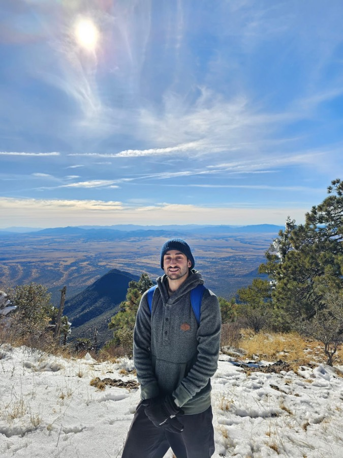
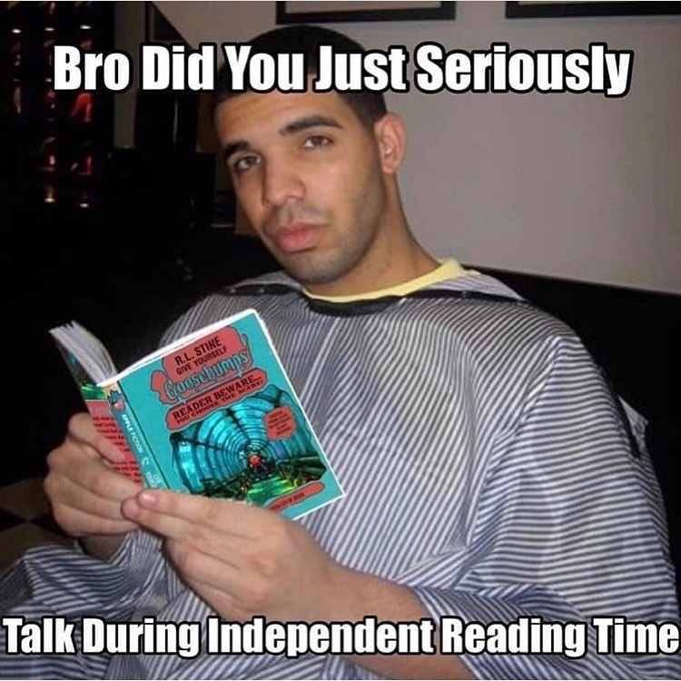

BiosphereLive
Spin the Earth through 846 land ecoregions and 269 marine regions — biomes, Köppen climate, and the species that live in each one.
Before moving back to Orange County I spent three years in Tucson as a signal processing engineer — implementing research papers for angle estimation, writing radar signal processing algorithms in C++, building LSTMs in MATLAB for time-series data, and reproducing the Lottery Ticket Hypothesis in Python. I hold an M.S. in Electrical Engineering with a machine learning depth from the University of Arizona, and a B.S. from UC San Diego.
Both are live — click through and spin them.

When the weather is nice, I enjoy finding a new trail with a great view. It's a great way to get my steps in and become more in touch with nature.

I read constantly — technical papers when something at work catches my interest, and plenty that has nothing to do with engineering.
I play regularly and follow the game closely. It's the part of my week that keeps everything else from happening at a desk.